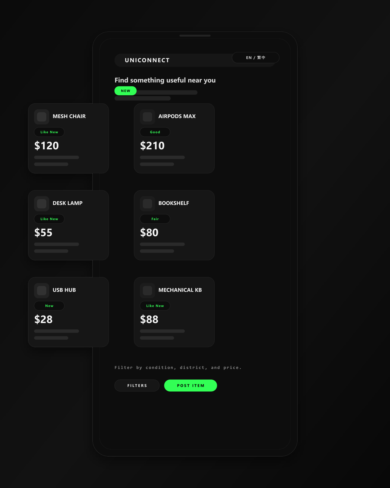

01 · UniConnect · Tzu Chi University
One marketplace for everything a campus passes around.
The problem
Everything a student wanted to sell, give away or recover was scattered across group chats that emptied out every semester. A textbook worth passing on was easier to bin than to advertise, and a lost wallet depended on whoever happened to still be in the right chat.
What we built
One platform doing four jobs — buy, sell, donate, and report lost items. Sign-in is limited to @gms.tcu.edu.tw addresses, so every listing belongs to a real person on campus, while anyone can browse without an account. Listings filter by category, condition and pickup spot, and the whole interface runs in English and 繁體中文 because the campus does.
What changed
Reuse stopped depending on being in the right group chat. Listings persist past the semester, lost property has one place to be posted, and the donation route means usable things leave campus instead of the bin.
